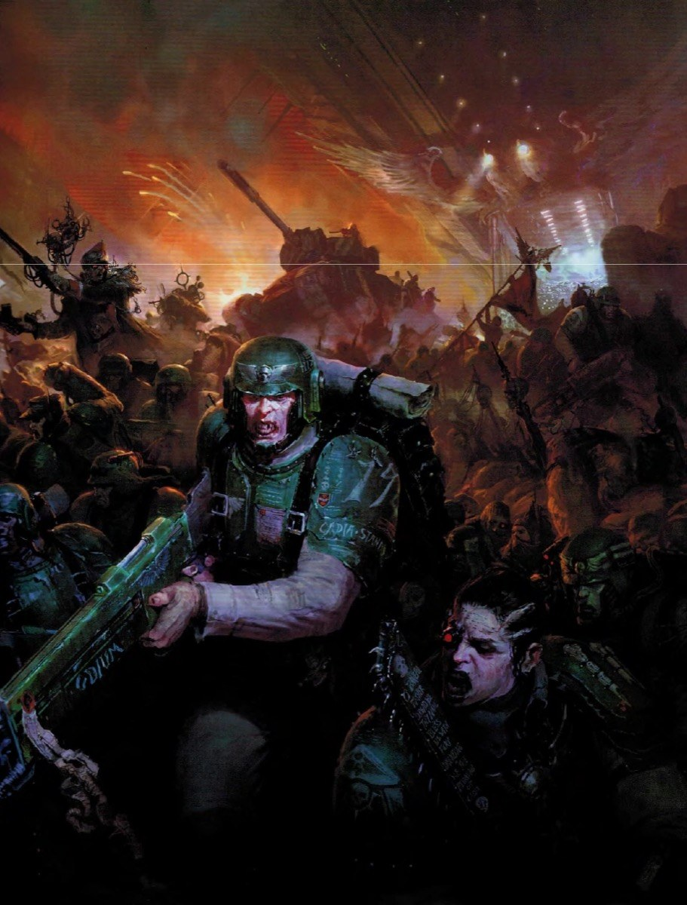

Tactica Imperium
| Tactica Imperium | |
|---|---|
 A guardsman advancing under the orders laid down in the Tactica | |
| Type | Military doctrinal compendium |
| Subject | Logistics, personnel, tactics, strategy, drill and military law for the Astra Militarum and its allied services |
| Compiled by | Departmento Munitorum and the Officio Militaris, with the approval of the office of the Lord Commander Militant |
| Origin | Field manuals of the Great Crusade, gathered from c. 021.M31[a] |
| Formal separation | Early M32, in the Imperial Reformation |
| Latest revision | Continuous; major revisions in the Era Indomitus |
| Status | In force across the Astra Militarum |
| Principal volumes | |
| Tactica Imperium: On the Raising of Regiments; Tactica Logistica; Imperial Infantryman's Uplifting Primer; Lexicanum Martialis | |
The Tactica Imperium, earlier known as the Tactica Imperialis, is the most widely used military manual of the Astra Militarum. Its officers and guardsmen consult it for guidance on logistics, personnel, tactics and strategy. Despite its name it is not a single work and has no known author. It is a collection of many documents, among them established doctrines, older manuals of military practice reaching back to the Great Crusade, and notes on combat approved for inclusion by the Departmento Munitorum and the Officio Militaris.[1]
The collection is never finished. The Imperium is too large, and its armies too varied in culture, technology and organisation, for any true standardisation to be reached. Volumes are added, withdrawn and rewritten as wars teach new lessons. A regiment from a forge world and a regiment from a death world may both be held to the Tactica while following very different instructions in practice. The Tactica sets the common framework, and the regimental manuals supply the detail.[1]
Its dictates are not meant to be read literally. Circumstance changes faster than any book, and a commander who refers every decision to a written solution has already lost the initiative. The Tactica's value lies in giving new officers a reference and in provoking thought, so that a skilled commander understands the principles of military science and can apply them where the book falls silent.[1]
Origins
[edit]The earliest ancestor of the Tactica lies in the Great Crusade. The Imperial Army, then called the Excertus Imperialis, was raised quickly from the worlds that the Space Marine Legions conquered. Its regiments had little in common. Commanders who had never fought together were sent into the same campaigns, and the administrators of the Corps Logisticae found that the Army could not be coordinated without some common teaching. Any military text that could be found was copied and sent out to the new regiments. Over the following decades this stock of texts grew into the first volumes of the Tactica.[2]
The great reorganisation of the Imperium after the Horus Heresy gave the collection its present purpose. The Second Founding and the writing of the Codex Astartes between about 014 and 021.M31 fixed the principle that no single commander should hold both the ground and the void, and the Army was in consequence divided from the fleets. The first volumes of the Tactica were compiled in the same years, from the field manuals of the Crusade, to give the surviving Army a doctrine that did not depend on the Legions.[1][b]
The separation became formal in the early 32nd millennium, when the Army was dissolved into the new Astra Militarum in the Imperial Reformation. The Tactica was then the instrument of that separation. Its doctrine on the relations between armies and fleets, and on the limits of a ground commander's authority, was adopted by the Departmento Munitorum as the rule for all Imperial land forces. The Imperial Navy was left with its own traditions, and the two services have kept distinct doctrines ever since.[1]
Structure and volumes
[edit]The Tactica is held in many volumes, each addressed to a different level of command. Its foundational part is concerned with the raising and supply of regiments. The volume On the Raising of Regiments, published in M41, sets out how a world is assessed, how many regiments it must provide, and how those regiments are equipped and trained before they are sent to war.[3] The Tactica Logistica, revised in 992.M41, governs the provision of armies in the field, from the munitions and fuel of a single company to the supply chains of a sector-wide campaign.[4]
Other volumes deal with the Militarum Auxilla, the auxiliary forces raised for the defence of the Imperium's worlds, and with the Imperial Guard's courts and military law. The volumes most often read by ordinary soldiers are the tactical treatises on fortification, close order drill, combat in cities and the employment of armour. The oaths of allegiance for new recruits are also held in the Tactica, and the statutes of military law that accompany them are enforced in every regiment.[5]
The Uplifting Primer
[edit]
The soldier's digest of the Tactica is the Imperial Infantryman's Uplifting Primer. It is written in plain Low Gothic, and it is given to every recruit on enlistment. Its first part is devoted to the Emperor, the Imperial Creed and the duty of the guardsman. Its second part gives the basic drill, weapon handling and field discipline. Its third and last part covers what a soldier must do when his officers fall, when he is cut off, or when he is ordered to hold a position against hopeless odds.[6]
The Primer was first issued in its present form in the 41st millennium. Its most recent revision, in 990.M41, reduced the length of the drill sections and added passages on the handling of the new lasguns and on survival in the Warp storms of the late 41st millennium. The Primer is thought to have been read by more Imperial citizens than any other military text, and its best-known lines are repeated as proverbs throughout the Astra Militarum.[6]
Regimental doctrines
[edit]The Tactica sets out a common doctrine, but each regiment adds its own manual. Most regimental doctrines were developed in the field and were approved by the Departmento Munitorum only after long service had proved them. Several have been so widely copied that they are now treated as doctrines in their own right.
- The Cadian Shock Troops are taught a doctrine of relentless attack and close coordination. Cadian regiments drill to a standard of uniformity that is rarely matched, and their manuals stress the immediate counterattack, the use of the Kasrkin storm troops as spearheads, and the combination of armour with infantry. Their doctrine was the model for much of the Tactica's later teaching on attack.[7]
- The Catachan Jungle Fighters are trained for the fight against the environment as much as against the enemy. Their doctrine, drawn from the death world of Catachan, teaches small-unit movement, field survival and the use of the jungle itself as a weapon. Catachan manuals are the most often adapted by other regiments fighting in dense terrain.
- The Valhallan Ice Warriors fight by attrition on frozen worlds. Their doctrine combines massed artillery bombardment with infantry assault waves, and it teaches that a regiment must be prepared to hold its ground until it is destroyed.
- The Death Korps of Krieg follow a doctrine of siege and static defence. Their manuals forbid retreat, rely on the Death Riders and the grenadiers of the regiment for close combat, and treat a position as held until the last soldier has fallen.[8]
- The Tallarn Desert Raiders are taught mechanised manoeuvre across open ground, using fast armour to strike and withdraw before the enemy can concentrate. Their doctrine is the principal source of the Tactica's teaching on desert warfare, and it was refined in the fighting around Tallarn.
- The Mordian Iron Guard are noted for drill, discipline and the steadiness of their fire. Their manuals stress the value of volley fire and the cohesion of the platoon, and they are often cited in the Tactica as the standard for infantry in a defensive line.
Principles
[edit]Attrition and massed firepower
[edit]The Tactica holds that the Imperium's greatest advantage is its numbers, and that a commander should use them to wear the enemy down. Attrition is not a passive strategy. Regiments are instructed to fix the enemy, to bring massed firepower to bear on his strongest positions, and to replace losses quickly from the reserves that the Munitorum keeps in the rear. The lasgun is the basic weapon of the regiment, and volume of fire is preferred to precision where the target is a horde.[1]
Combined arms
[edit]No regiment is meant to fight alone. The Tactica prescribes the combination of infantry, armour and artillery in every operation, each arm supporting the others. Armour is to be used to break the enemy's line, artillery to soften his strongpoints, and infantry to hold the ground that armour has won. The Tactica warns that a commander who relies on heavy weapons alone will be outmanoeuvred, and one who uses infantry without support will be destroyed by enemy fire.[1]
Siege doctrine
[edit]The Tactica has long contained extensive instruction on siege, both attack and defence. Siege doctrine teaches the construction of field fortifications, the careful reduction of enemy bastions by artillery, and the holding of cities with a fixed defence in depth. The Death Korps of Krieg are the Imperium's most complete exponents of the art, and their manuals are regarded as the standard for any regiment that must defend a fortress.[8]
The Commissariat
[edit]Every regiment carries commissars of the Officio Prefectus. Their role, written into the Tactica, is to maintain discipline, to see that orders are obeyed, and to watch for disloyalty among officers and men. The Tactica states that a commissar must be willing to execute a coward or a traitor on the spot, and it forbids him from taking command of a battle, which remains with the regiment's officers. Many commanders have found the commissars a burden, and some have argued that they should be reduced in number. Their presence is nonetheless retained in every doctrine of the Tactica.[1]
Orders and vox
[edit]The Tactica treats communications as the nerve of an army. Orders are given by vox-link where possible, and the form of a command is fixed so that it cannot be misunderstood under fire. Each order should state the objective, the means, and the time at which it must be achieved. Where vox fails, the Tactica prescribes runners, signal flags and the pre-arranged codes of each regiment. A commander who cannot be reached is to be replaced by his next senior officer at once.[1]
Commanders and the Tactica
[edit]Many of the Imperium's great commanders are remembered for applying the Tactica well, and a few for rewriting it. Solar Macharius, who held the office of Lord Solar during his tenure of 386–400.M41, was among the most ambitious. His campaigns extended the Imperium across many worlds, and he is said to have demanded that his armies learn from every defeat and that the lessons be written into the Tactica at once. His conquests did not hold after his death, but his insistence on the rapid revision of doctrine is still cited in the Officio Militaris.[9]
Lord Castellan Ursarkar E. Creed served as the commander of the defence of Cadia, and he is the most celebrated exponent of Cadian doctrine. Creed held the fortress-city of Kasr Kraf through the Fall of Cadia in 999.M41, when the world was destroyed by the Thirteenth Black Crusade of Abaddon the Despoiler. His surviving teachings are read in every Cadian regiment, and his decisions in the last days of the defence are taught as examples of the Tactica's principles in practice.[9]
Sebastian Yarrick, a Commissar who rose to the rank of Lord Commissar, won his reputation at Armageddon. His defence of the hive cities against the Orks in the Wars for Armageddon was fought in defiance of the Tactica's assumptions about open battle, and his later writings argue that the Tactica must be read as a set of questions, not answers. His view is now standard among the Commissariat.[10]
Slaydo, who was Warmaster of the Sabbat Worlds Crusade, drove the Crusade through a campaign that had been thought too costly by the Administratum's staff. He applied the Tactica's combined arms principles on a scale that had not been seen since the Great Crusade, and he is remembered for the lessons he drew from the fighting on Balhaut. He was killed there in c. 765.M41.[c] His chosen successor, Macaroth, continued the Crusade, and the Sabbat Worlds Crusade's staff manuals are still held as a model of how the Tactica can be adapted to a long campaign.[9]
Revisions across the millennia
[edit]The Tactica has been revised many times. The earliest revisions, made in the first centuries of the 32nd millennium, were concerned mainly with the structure of the new Astra Militarum and with the final break from the fleets. The Age of Apostasy in M36 revealed the risks of an army loyal to a single office, and the revisions that followed the Thorian Reformation restricted the power of any single commander to hold regiments in the field for long.[11]
Revisions in the 41st millennium were more frequent and more practical. Wars that cost whole armies, such as the Wars for Armageddon, were studied closely by the Officio Militaris, and their findings were written into new volumes. After the fall of Cadia, the Tactica was revised in 010.M42 to reflect the loss of the Cadian doctrine's home and to make its principles available to regiments that had never trained on the fortress world.[7]
The Era Indomitus
[edit]The Era Indomitus has brought the greatest changes to the Tactica since the Imperial Reformation. The Great Rift cut many regiments off from their supply lines, and the Indomitus Crusade led by Roboute Guilliman requires armies that can operate for long periods without the support of the Astronomican. The Tactica now contains new frameworks for the battle group, the hub-fortress garrison and the deployment of regiments across unstable warp routes.[9]
Guilliman's reforms of the Imperial war machine have made the Tactica a more formal document. The Officio Logisticarum, set up beside the Departmento Munitorum to bypass its delays, now issues supplementary volumes on the call-up of tithed regiments and the command of mixed forces, including those of the Imperial Navy. Imperial scholars disagree over how far these changes reach. Some hold that the Tactica has been fully rewritten, while others hold that the old volumes remain in force wherever the new ones are silent.[9]
Relations with the Imperial Navy
[edit]The Tactica was intended to keep the Astra Militarum and the Imperial Navy apart. Its volumes deal with the orbital support of ground operations, the landing of troops and the withdrawal of armies from a world, and in each case the Navy and the Army retain separate authority. The Navy's commanders are to advise the ground commander on the availability of ships, but the decision to commit an army lies with the Army, and the decision to commit a fleet lies with the Navy.[1]
Imperial records differ on how strictly this has been observed. Navy and Army officers have sometimes shared doctrine in the Tactica's sections on boarding actions and the defence of void-ports, and some of these shared passages were written in the Era Indomitus. The Navy's own doctrinal volumes are held separately, and the Navy regards the Tactica as a manual for ground warfare only.[1]
Timeline
[edit]| Date | Event |
|---|---|
| c. 798.M30 | The Excertus Imperialis is raised for the Great Crusade; the Corps Logisticae begins collecting military texts.[d] |
| c. 004.M31 | Remembrancers record the Army's growing need for a common doctrine.[2] |
| c. 014–021.M31 | The Codex Astartes is written; the first volumes of the Tactica are gathered from the Crusade's field manuals.[e] |
| 021.M31 | The Second Founding divides the Legions; the Army is separated from the fleets in principle. |
| early M32 | The Army is dissolved in the Time of Rebirth and the Astra Militarum is formed; the Tactica separates it from the Imperial Navy. |
| M36 | The Age of Apostasy; the Tactica is revised after the Thorian Reformation. |
| 386–400.M41 | Solar Macharius serves as Lord Solar, and his campaigns test the Tactica across many worlds. |
| c. 765.M41 | Slaydo is killed at Balhaut during the Sabbat Worlds Crusade; Macaroth succeeds him.[f] |
| M41 | The Tactica's volume On the Raising of Regiments is published. |
| 990.M41 | The Imperial Infantryman's Uplifting Primer is revised. |
| 992.M41 | The Tactica Logistica is revised. |
| 998–999.M41 | The Third War for Armageddon is fought, and Sebastian Yarrick wins his reputation. |
| 999.M41 | The Fall of Cadia; Lord Castellan Creed holds Kasr Kraf to the last. |
| 010.M42 | The Tactica is revised to make Cadian doctrine available to regiments across the Imperium. |
| c. 000.M42 onward | The Indomitus Crusade begins under Roboute Guilliman; the Tactica gains frameworks for the battle group and the hub-fortress garrison.[g] |
See also
[edit]Notes
[edit]- ^ Estimated; no record gives an exact year.
- ^ Estimated; no record gives an exact year.
- ^ Estimated; no record gives an exact year.
- ^ Estimated; no record gives an exact year.
- ^ Estimated; no record gives an exact year.
- ^ Estimated; no record gives an exact year.
- ^ Estimated; no record gives an exact year.
References
[edit]- ^ a b c d e f g h i j k Tactica Imperium (rev. 021.M31 onward). Departmento Munitorum, Terra.
- ^ a b Sindermann, Kyril (c. 004.M31). Remembrances of the 63rd Expedition. Remembrancer Order.
- ^ Tactica Imperium: On the Raising of Regiments (M41). Departmento Munitorum.
- ^ Departmento Munitorum (rev. 992.M41). Tactica Logistica: On the Provision of Armies. Terra.
- ^ Tactica Imperium: The Militarum Auxilla (M41). Departmento Munitorum.
- ^ a b Imperial Infantryman's Uplifting Primer (rev. 990.M41). Departmento Munitorum.
- ^ a b Tactica Imperium (rev. 010.M42). Officio Militaris.
- ^ a b Lexicanum Martialis, the siege volume (rev. M41). Officio Militaris.
- ^ a b c d e Records of the Indomitus Crusade (ongoing). Office of the Lord Commander.
- ^ Chronicles of the Heresy (sealed). Logos Historica Verita, Terra.
- ^ Liber Ecclesiasticus (M37). Adeptus Ministorum.